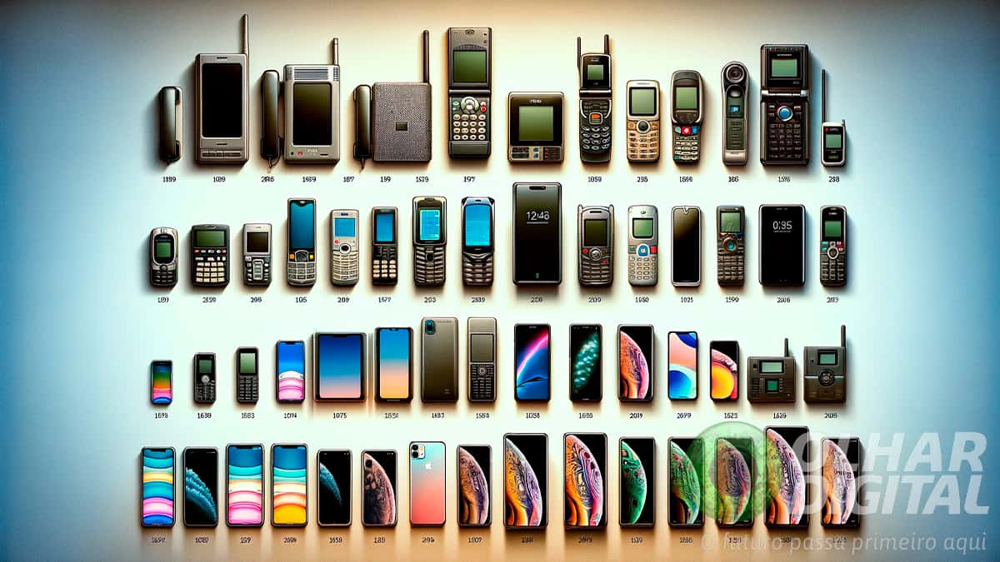

Esse novo formato não apenas facilitou a comunicação, mas também tornou a tecnologia mais acessível e integrada ao cotidiano das pessoas. A interface touchscreen revolucionou a forma como os usuários interagiam com seus dispositivos, eliminando a necessidade de botões físicos e permitindo uma experiência mais intuitiva.
O iPhone também popularizou o conceito de aplicativos, permitindo que usuários personalizassem seus dispositivos com uma infinidade de ferramentas e serviços, desde redes sociais até jogos e produtividade. Essa explosão de aplicativos criou um ecossistema que mudou a forma como trabalhamos, nos comunicamos e nos divertimos. Com a crescente conectividade e a capacidade de acessar a internet em qualquer lugar, os smartphones rapidamente se tornaram indispensáveis. A era dos smartphones não apenas facilitou a comunicação e o acesso à informação, mas também alterou profundamente as dinâmicas sociais e culturais. Em resumo, o lançamento do iPhone não foi apenas uma inovação tecnológica; foi uma revolução que transformou a forma como vivemos, trabalhamos e nos conectamos, estabelecendo um novo padrão para a tecnologia móvel que continua a evoluir até hoje.
Eu acho que estamos apenas começando a arranhar a superfície do que os smartphones podem fazer.
- Steve Jobs.
